歡迎來到 PHP雲端ERP 的世界
PHP 是開發 雲端ERP 應用程式的工具組。提供簡易的介面和邏輯結構來使用豐富的函式庫，其目的是讓你加 快開發速度。使用 PHP 只需要寫少少的程式，創造力可專注在專案開發。
雲端ERP 使用手冊目錄
參、日常異動處理
1.報價單建立作業
■程式代號：COPI05
■程式名稱：報價單建立作業
■作業目的：針對與客戶的報價過程及記錄，可透過本作業得以保留，並可列印報價單憑證作為內部審查或核准的依據。
■輸入畫面：
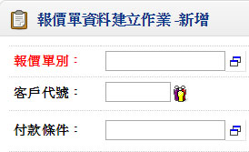 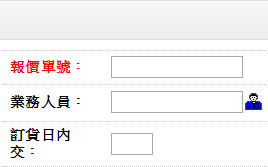- ■重要欄位說明：
- 匯率
- 預設該報價日期（或最近一筆）之幣別的『銀行買入匯率』
- 含稅
- 不可空白，預設客戶基本資料的設定，可修改
- 當修改時則須重新計算單身的『報價金額』、『稅額』、『合計』
- 交貨日
- 可空白，資料若輸入將來客戶訂單如果由報價單直接產生時，訂單之預交日期將以訂單單據日期加上此交貨天數，推算出訂單的預交日期
- 客戶確認
- 註記本報價單是否客戶已經確認
- 如訂單要以複製報價單方式輸入,報價單需為客戶確認
- 分量計價、功能紐：分量計價維護（單身明細）
- 若單身分量計價鈕啟動『ˇ』，表示本品號有分量計價的需求，則可開窗作資料輸入;關於輸入的欄位說明請詳「客戶商品計價建立作業」說明
- 生效日
- 不可空白，指本報價單單價的生效日期;若報價單為『更新核價』，本欄位資料將更新至「客戶商品計價」之『生效日期』
- 失效日
- 可空白，指本報價單單價的失效日期，若報價單為『更新核價』，本欄位資料將更新至「客戶商品計價」之『失效日期』
- 失效日不可≦生效日
- 單價
- 單價的預設順序如下：(依客戶基本資料中的取價順序)
- 客戶商品計價資料
- 客戶基本資料建立中之取價順序
- 0
- 如果輸入時空白，但卻輸入金額，則系統將由金額倒算單價;單價=金額/數量
- 依幣別匯率建立作業之單價取位方式取位
- 金額
- 金額=單價×數量
- 依幣別匯率建立作業之金額取位方式取位
2.客戶訂單建立作業
■程式代號：COPI06
■程式名稱：客戶訂單建立作業
■作業目的：客戶交易訂單輸入，若客戶銷售屬於零售業時， 無須訂單依然可進行銷售單的建立。
■輸入畫面：
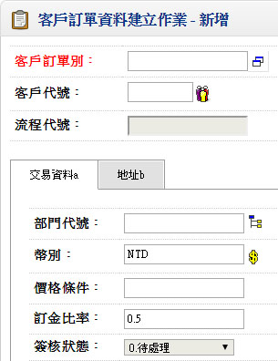 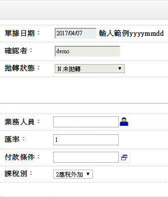▼
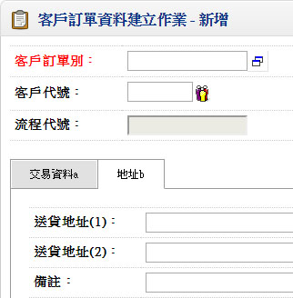 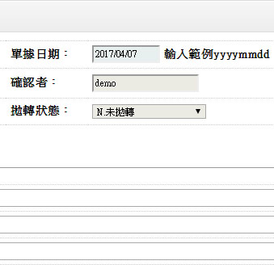- ■重要欄位說明：
- 訂金比率
- 預收作業之資料欄位
- 結帳單時作訂單訂金預收,待結帳時可作預收待抵
- L/C NO.
- 可空白，出口系統之資料欄位
- 可由出貨通知單確認後單據上之L/C NO.回寫
- 訂單數量
- 可用量:現有存量－已受訂量
- 已交數量
- 顯示欄位，由銷貨單及銷退單的確認所更新。若資料發生異常時，執行維護作業中的「訂單已交量重計作業」
- 贈品量
- 數量必須大於零，將扣庫存量，並增加銷貨成本
- 贈品已交量
- 顯示欄位，由銷貨單及銷退單的確認所更新。若資料發生異常時，請執行維護作業中的「訂單已交量重計作業」
- 單價
- 取價順序依客戶基本資料檔所設定的取價順序。(請參考客戶基本資料建立)
- 一般客戶基本資料檔所設定的取價順序如下：
- 報價單（由報價單複製）
- 客戶商品計價資料
- 客戶基本資料設定折扣率×標準售價（品號基本資料建立中）
- 折扣率
- 由客戶基本資料建立中設定，預設上一筆，若無上一筆預設100%
- 輸入與顯示時為×100.0 存入時除以100。
例:50% 存入值為0.5000 - 金額
- 金額＝單價×數量×折扣率
- 預交日
- 可空白，預交日≧訂單日期
- 若訂單由報價單複製，則預交日期由訂單日期與報價單單頭的交貨日天數來推算
- 客戶品號
- 可用「客戶品號資料」中『客戶品號』來做品號的輸入
- 預測代號-序號
- 可空白，此銷售預測資料必須為『納入生產計畫』的銷售預測資料
- 結案碼
- 顯示欄位，有三種狀態：
- 已交數量≧訂單數量時，顯示【Y:已結案】
- 已交數量＜訂單數量時，顯示【N:未結案】
- 透過功能鈕的指定結案作業更新時，可顯示【y:指定結案】
- 前置單據－單別
- 若訂單由報價單複製，則本單據為報價單單號
- 訂單稅額
- 顯示欄位
- 由單頭課稅別換算而得，若課稅別為『應稅外加』，則＝金額×稅率，若 課稅別為『應稅內含』，則稅額＝金額－金額／（1＋稅率）
3.銷貨單建立作業
■程式代號：COPI08
■程式名稱：銷貨單建立作業
■作業目的：客戶銷貨記錄輸入。
■註記:
- 客戶訂單建立作業。
.若銷貨單之單據性質設定為『核對訂單』，則銷貨時必須核對已存在訂單單號，若不核對訂單，則允許無訂單來源的銷貨單輸入作業。 - 帳款系統（單據性質建立作業==>結帳單）
■若銷貨單之單據性質設定為『直接結帳』，則表示銷貨單核准時，同時產生客戶之結帳單（應收帳款）。所以必須先於單據性質中設定結帳單單別。
■輸入畫面：
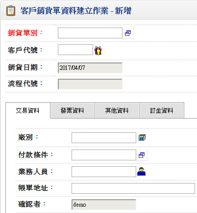 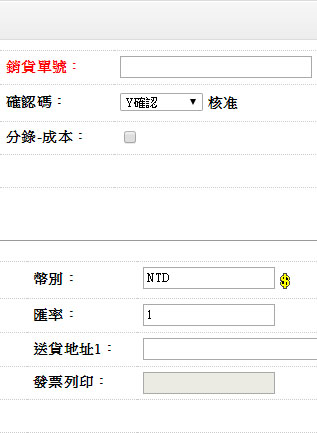▼
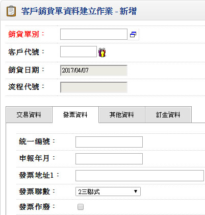 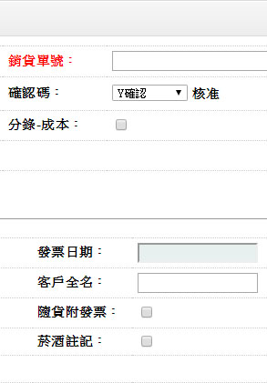▼
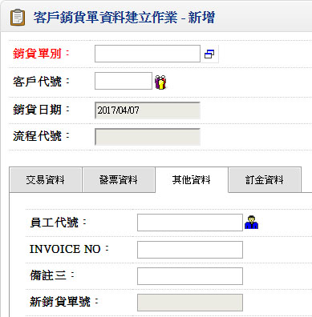 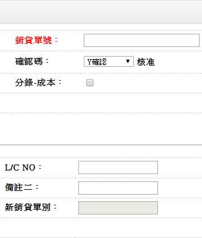▼
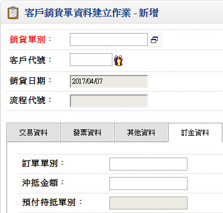 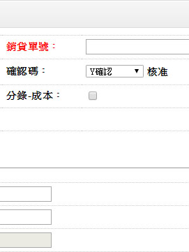- ■重要欄位說明：
- 客戶代號
- 不可空白，可輸入不存在的客戶代號
- 現銷
- 現銷的銷貨單不產生結帳單（應收帳款）
- 發票資料
- 營業稅媒體申報系統之銷項資料來源欄位
- 如單據性質設定「v自動產生發票號碼」,可由系統依每月發票資料之空白發票自動賦予發票號碼
- 數量
- 檢查「庫別基本資料」之『庫存量不足允許出庫』設定，若管制時，庫存數量≧銷貨數量
- 若銷貨單由訂單複製產生時,預設「銷貨數量=訂單數量-訂單已交量」
- 若品號有『超交管理』,檢查數量及贈品量不可超交
- 贈品量
- 不計價的數量
- 單價
- 銷貨單的取價順序：
- 客戶訂單
- 客戶商品計價資料
- 客戶基本資料設定取價順序
- 輸入時若單價空白，當輸入金額時，會由金額換算單價顯示於本欄位
- 金額
- 金額=單價×數量×折扣率
- 訂單單別、單號、序號
- 如果銷貨單為核對訂單時，本欄位不可空白，而且該訂單必須為已存在的客戶訂單資料
- 資料輸入時，若之前欄位先輸入，再輸入本欄位，系統將檢查所有先前欄位資料是否與訂單資料相符，資料不一致時將顯示所有提示訊息
- 批號
- 「品號資料建立作業」中設定為『批號管理』，則此欄位不可空白
- 客戶品號
- 輸入銷貨單時可以使用客戶的品號來作品號的輸入，輸入時請按[F2]客戶品號資料查詢，輸入後可於「客戶商品計價資料」將『客戶品號』對應的『品號』帶出（含相關資訊如單位、品名、規格…等）
- 結帳碼
- 顯示欄位，顯示該銷貨單是否已經產生對應的「結帳單」（帳款管理系統）
- 計有兩種狀態，1.未結帳 2.已結帳。
- 現銷之銷貨單確認時，狀態更新為『已結帳』
- 結帳單別
- 顯示欄位，若該銷貨單單據為『已結帳』時，此將顯示該銷貨單對應的結帳單單別
- 若為現銷的銷貨單，雖已結帳但欄位仍為空白
4.銷退單建立作業
■程式代號：COPI09
■程式名稱：銷退單建立作業
■作業目的：對已銷貨出廠的商品，因某些原因客戶要求退回 時，請於本作業將銷貨退回的相關資料建檔，並進行入庫作業。
■註記:
- 帳款系統（單據性質建立作業==>結帳單）
- 若銷退單之單據性質設定為『直接結帳』，則表示銷退單核准時，同時產生客戶之結帳單（應收帳款） ，所以必須先於單據性質中設定結帳單單別
■輸入畫面：
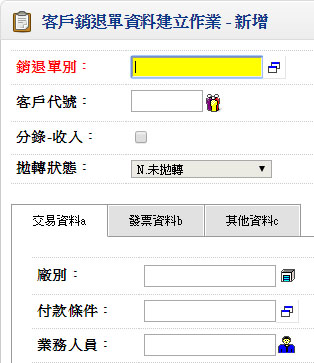 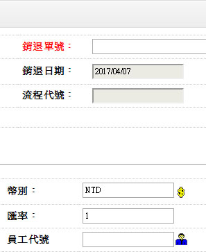▼
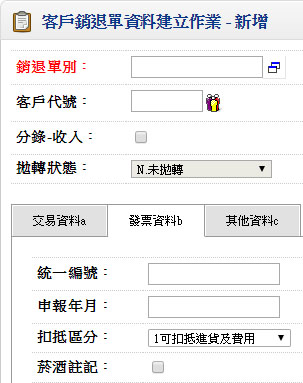 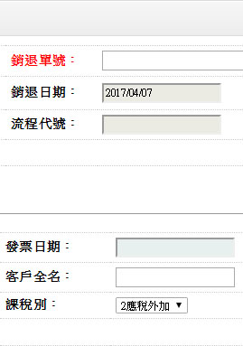▼
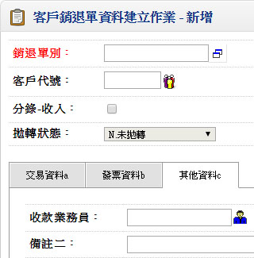
- ■重要欄位說明：
- 發票資料
- 「營業稅媒體申報系統」之銷項資料來源欄位
- 數量
- 若輸入銷貨單號，則數量不可大於『銷貨數量』
- 若輸入訂單單號，則數量不可大於『已交數量』
- 單價
- 單價順序:
- 銷貨單
- 客戶訂單
- 客戶商品計價資料
- 單價＝金額／數量／折扣率
- 退貨庫別
- 不可空白。
- 若退回之商品可能為不良品或者已經為不良品，應退至不良品倉庫，以方便與正常良品區隔。
- 銷貨單別、訂單單別
- 若單據性質設定「v核對訂單」,則此欄位必須存在,且需與訂單及銷貨單相對應
- 結帳碼、結帳單別
- 顯示欄位，顯示該退貨單是否已經產生對應的「結帳單」（帳款管理系統）; 若該銷退單單據為『已結帳』時，此將顯示該銷退單對應的結帳單單別
- 計有兩種狀態，1.未結帳 2.已結帳